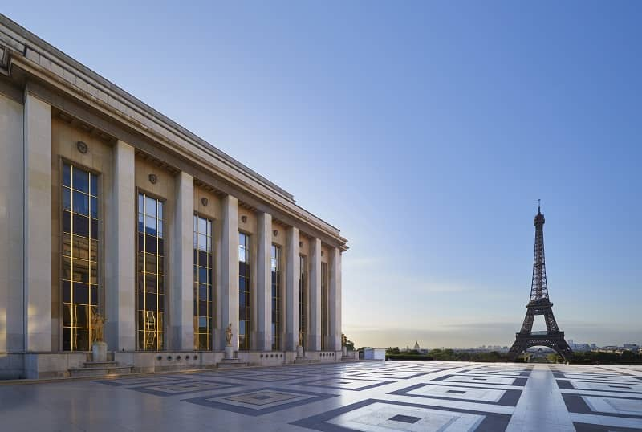

La tour Eiffel a été construite entre 1887 et 1889 par l’ingénieur français Gustave Eiffel dont l’entreprise était spécialisée dans les constructions de charpentes et de structures métalliques. Gustave Eiffel est à l’origine de nombreux ouvrages métalliques en Europe, dont le Viaduc de Porto (Portugal), le Viaduc de Garabit (France) et la Gare de Budapest (Hongrie).
À Paris, nombreux sont les lieux où il est possible d’admirer la Tour. Parmi eux, 3 endroits incontournables vous permettront de garder le plus beau souvenir de la Dame de Fer.
Au plus proche de la Tour, le Champ-de-Mars vous offrira un moment de détente et de promenade dans son vaste parc. Côté Palais de Chaillot, le parvis du Trocadéro donne également une vue imprenable sur l’ensemble de la Tour. Pour une vue dégagée avec la Seine en premier plan, rendez-vous sur le pont de Bir-Hakeim où se trouve la statue de la France renaissante
Du haut de la Tour Eiffel, on peut voir les principaux monuments de Paris : la cathédrale Notre-Dame, la tour Montparnasse et l’arc de triomphe. On peut voir aussi le fleuve qui traverse la capitale : la Seine. La tour Eiffel est située sur le Champ-de-Mars. C’est un parc où les gens viennent se promener en famille et entre amis.

Tout en haut de la tour Eiffel, il y a des antennes qui émettent les programmes de radio et de télévision. Il y a même des restaurants.
La tour Eiffel est une tour de fer puddlé de 324 mètres de hauteur située à Paris, à l’extrémité nord-ouest du parc du Champ-de-Mars en bordure de la Seine dans le 7ᵉ arrondissement. Son adresse officielle est 5, avenue Anatole-France.
1887 - 1889 (5 mois pour les fondations et 21 mois pour le montage de la partie métallique)